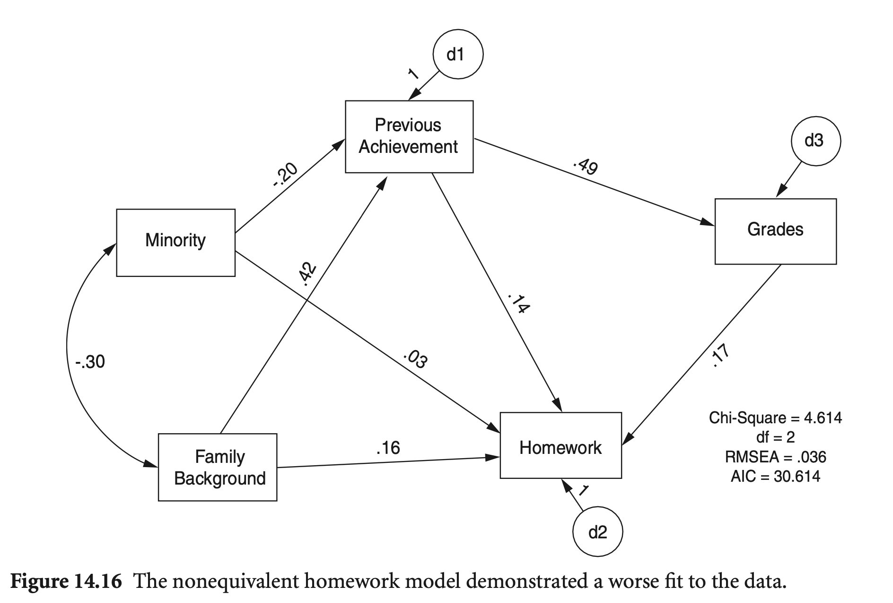

Load libraries
library(haven)
library(psych)
library(tidyverse)
library(lavaan)
library(semTools)
library(manymome)Multiple Regression and Beyond (3e) by Timothy Z. Keith
library(haven)
library(psych)
library(tidyverse)
library(lavaan)
library(semTools)
library(manymome)# Load the data
nels <- read_csv("data/n=1000,stud & par shorter all miss blank.csv")
nels |> print()# A tibble: 1,000 × 93
stu_id sch_id sstratid sex race ethnic bys42a bys42b bys44a bys44b bys44c
<dbl> <dbl> <dbl> <dbl> <dbl> <dbl> <dbl> <dbl> <dbl> <dbl> <dbl>
1 124966 1249 1 2 4 1 3 4 2 4 4
2 124972 1249 1 1 4 1 4 5 1 3 3
3 175551 1755 1 2 3 0 NA 3 2 3 3
4 180660 1806 1 1 4 1 2 NA 1 4 4
5 180672 1806 1 2 4 1 2 3 1 4 3
6 298885 2988 2 1 3 0 5 4 2 3 3
# ℹ 994 more rows
# ℹ 82 more variables: bys44d <dbl>, bys44e <dbl>, bys44f <dbl>, bys44g <dbl>,
# bys44h <dbl>, bys44i <dbl>, bys44j <dbl>, bys44k <dbl>, bys44l <dbl>,
# bys44m <dbl>, bys48a <dbl>, bys48b <dbl>, bys79a <dbl>, byfamsiz <dbl>,
# famcomp <dbl>, bygrads <dbl>, byses <dbl>, byfaminc <dbl>, parocc <dbl>,
# bytxrstd <dbl>, bytxmstd <dbl>, bytxsstd <dbl>, bytxhstd <dbl>,
# bypared <dbl>, bytests <dbl>, par_inv <dbl>, f1s36a1 <dbl>, …# SPSS data: labelled data
library(haven) # install.packages("haven")
nels_sav <- read_sav("data/n=1000,stud & par shorter.sav")
nels_sav |> print()# A tibble: 1,000 × 93
stu_id sch_id sstratid sex race ethnic bys42a bys42b bys44a
<dbl+lbl> <dbl+lbl> <dbl+lb> <dbl+l> <dbl+l> <dbl+l> <dbl+lb> <dbl+lb> <dbl+l>
1 124966 1249 1 2 [Fem… 4 [Whi… 1 [whi… 3 [2-3… 4 [3-4… 2 [Agr…
2 124972 1249 1 1 [Mal… 4 [Whi… 1 [whi… 4 [3-4… 5 [4-5… 1 [Str…
3 175551 1755 1 2 [Fem… 3 [Bla… 0 [blk… NA 3 [2-3… 2 [Agr…
4 180660 1806 1 1 [Mal… 4 [Whi… 1 [whi… 2 [1-2… NA 1 [Str…
5 180672 1806 1 2 [Fem… 4 [Whi… 1 [whi… 2 [1-2… 3 [2-3… 1 [Str…
6 298885 2988 2 1 [Mal… 3 [Bla… 0 [blk… 5 [4-5… 4 [3-4… 2 [Agr…
# ℹ 994 more rows
# ℹ 84 more variables: bys44b <dbl+lbl>, bys44c <dbl+lbl>, bys44d <dbl+lbl>,
# bys44e <dbl+lbl>, bys44f <dbl+lbl>, bys44g <dbl+lbl>, bys44h <dbl+lbl>,
# bys44i <dbl+lbl>, bys44j <dbl+lbl>, bys44k <dbl+lbl>, bys44l <dbl+lbl>,
# bys44m <dbl+lbl>, bys48a <dbl+lbl>, bys48b <dbl+lbl>, bys79a <dbl+lbl>,
# byfamsiz <dbl+lbl>, famcomp <dbl+lbl>, bygrads <dbl+lbl>, byses <dbl+lbl>,
# byfaminc <dbl+lbl>, parocc <dbl>, bytxrstd <dbl+lbl>, bytxmstd <dbl+lbl>, …nels_sav$ethnic |> labelled::val_labels() |> print()blk,namer,hisp white-asian missing
0 1 8 variables: byses, bytests, par_inv, ffugrad, ethnic
Underrepresented ethnic minority, or URM, is coded so that students from African American, Hispanic, and Native backgrounds are coded 1 and students of Asian and Caucasian descent are coded 0.
nels_gpa <-
nels |>
select(ethnic, ses = byses, prev = bytests, par = par_inv, gpa = ffugrad) |>
na.omit()
nels_gpa |> print()# A tibble: 811 × 5
ethnic ses prev par gpa
<dbl> <dbl> <dbl> <dbl> <dbl>
1 1 -0.563 64.4 1.04 5.25
2 1 0.123 48.6 -0.0881 3
3 0 0.229 49.7 -0.390 2.5
4 1 0.687 46.6 0.199 6.5
5 1 0.633 54.9 0.975 4.25
6 0 0.992 38.5 -0.157 6
# ℹ 805 more rowslibrary(psych)
nels_gpa |> lowerCor(digits = 3) ethnc ses prev par gpa
ethnic 1.000
ses 0.333 1.000
prev 0.330 0.461 1.000
par 0.075 0.432 0.445 1.000
gpa 0.131 0.299 0.499 0.364 1.000nels_gpa |> describe(skew = F) |> print(digits = 3) vars n mean sd median min max range se
ethnic 1 811 0.793 0.406 1.000 0.000 1.000 1.000 0.014
ses 2 811 0.047 0.766 0.011 -2.414 1.874 4.288 0.027
prev 3 811 52.323 8.584 52.649 30.397 70.240 39.844 0.301
par 4 811 0.059 0.794 0.191 -3.148 1.493 4.642 0.028
gpa 5 811 5.760 1.450 6.000 1.000 8.000 7.000 0.051모형의 적합도에 대한 신뢰할 만한 정보를 얻기 위해서는 자유도(degree of freedom)가 높도록 모형을 만들어야 함(specification).
여기서는 자유도가 0인 포화모형을 우선 고려한 후, 이후 더 단순한 모형을 고려할 것임. 자유도가 0이면 모형의 적합도는 의미가 없으며, 이 경우를 포화모형(saturated model)이라고 함.
library(lavaan)
library(semTools)
mod <- "
gpa ~ ethnic + ses + prev + par
par ~ prev + ses + ethnic
prev ~ ses + ethnic
"
sem_fit <- sem(model = mod, data = nels_gpa, fixed.x = FALSE)
summary(sem_fit, standardized = TRUE, rsquare = TRUE) |> print()lavaan 0.6-19 ended normally after 1 iteration
Estimator ML
Optimization method NLMINB
Number of model parameters 15
Number of observations 811
Model Test User Model:
Test statistic 0.000
Degrees of freedom 0
Parameter Estimates:
Standard errors Standard
Information Expected
Information saturated (h1) model Structured
Regressions:
Estimate Std.Err z-value P(>|z|) Std.lv Std.all
gpa ~
ethnic -0.124 0.117 -1.058 0.290 -0.124 -0.035
ses 0.093 0.069 1.355 0.175 0.093 0.049
prev 0.070 0.006 11.414 0.000 0.070 0.417
par 0.292 0.064 4.531 0.000 0.292 0.160
par ~
prev 0.032 0.003 10.040 0.000 0.032 0.345
ses 0.333 0.036 9.351 0.000 0.333 0.321
ethnic -0.286 0.063 -4.528 0.000 -0.286 -0.146
prev ~
ses 4.431 0.362 12.236 0.000 4.431 0.395
ethnic 4.195 0.684 6.135 0.000 4.195 0.198
Covariances:
Estimate Std.Err z-value P(>|z|) Std.lv Std.all
ethnic ~~
ses 0.103 0.011 9.002 0.000 0.103 0.333
Variances:
Estimate Std.Err z-value P(>|z|) Std.lv Std.all
.gpa 1.521 0.076 20.137 0.000 1.521 0.724
.par 0.452 0.022 20.137 0.000 0.452 0.719
.prev 55.370 2.750 20.137 0.000 55.370 0.752
ethnic 0.164 0.008 20.137 0.000 0.164 1.000
ses 0.586 0.029 20.137 0.000 0.586 1.000
R-Square:
Estimate
gpa 0.276
par 0.281
prev 0.248
옵션들
ci: confidence intervalheader: 헤더 표시 여부nd: the number of digitssummary(sem_fit, standardized = TRUE, ci = TRUE, header = FALSE, nd = 2) |> print()
Parameter Estimates:
Standard errors Standard
Information Expected
Information saturated (h1) model Structured
Regressions:
Estimate Std.Err z-value P(>|z|) ci.lower ci.upper
gpa ~
ethnic -0.12 0.12 -1.06 0.29 -0.35 0.11
ses 0.09 0.07 1.36 0.18 -0.04 0.23
prev 0.07 0.01 11.41 0.00 0.06 0.08
par 0.29 0.06 4.53 0.00 0.17 0.42
par ~
prev 0.03 0.00 10.04 0.00 0.03 0.04
ses 0.33 0.04 9.35 0.00 0.26 0.40
ethnic -0.29 0.06 -4.53 0.00 -0.41 -0.16
prev ~
ses 4.43 0.36 12.24 0.00 3.72 5.14
ethnic 4.20 0.68 6.13 0.00 2.85 5.54
Std.lv Std.all
-0.12 -0.03
0.09 0.05
0.07 0.42
0.29 0.16
0.03 0.34
0.33 0.32
-0.29 -0.15
4.43 0.40
4.20 0.20
Covariances:
Estimate Std.Err z-value P(>|z|) ci.lower ci.upper
ethnic ~~
ses 0.10 0.01 9.00 0.00 0.08 0.13
Std.lv Std.all
0.10 0.33
Variances:
Estimate Std.Err z-value P(>|z|) ci.lower ci.upper
.gpa 1.52 0.08 20.14 0.00 1.37 1.67
.par 0.45 0.02 20.14 0.00 0.41 0.50
.prev 55.37 2.75 20.14 0.00 49.98 60.76
ethnic 0.16 0.01 20.14 0.00 0.15 0.18
ses 0.59 0.03 20.14 0.00 0.53 0.64
Std.lv Std.all
1.52 0.72
0.45 0.72
55.37 0.75
0.16 1.00
0.59 1.00
표준화된 파라미터 추정치만 표시
standardizedSolution(sem_fit, type = "std.all") |> print() lhs op rhs est.std se z pvalue ci.lower ci.upper
1 gpa ~ ethnic -0.035 0.033 -1.058 0.290 -0.099 0.030
2 gpa ~ ses 0.049 0.036 1.356 0.175 -0.022 0.120
3 gpa ~ prev 0.417 0.034 12.111 0.000 0.349 0.484
4 gpa ~ par 0.160 0.035 4.564 0.000 0.091 0.228
5 par ~ prev 0.345 0.033 10.462 0.000 0.280 0.409
6 par ~ ses 0.321 0.033 9.682 0.000 0.256 0.386
7 par ~ ethnic -0.146 0.032 -4.553 0.000 -0.209 -0.083
8 prev ~ ses 0.395 0.030 13.137 0.000 0.336 0.454
9 prev ~ ethnic 0.198 0.032 6.224 0.000 0.136 0.261
10 gpa ~~ gpa 0.724 0.027 27.093 0.000 0.671 0.776
11 par ~~ par 0.719 0.027 26.858 0.000 0.666 0.771
12 prev ~~ prev 0.752 0.026 28.610 0.000 0.701 0.804
13 ethnic ~~ ethnic 1.000 0.000 NA NA 1.000 1.000
14 ethnic ~~ ses 0.333 0.031 10.673 0.000 0.272 0.394
15 ses ~~ ses 1.000 0.000 NA NA 1.000 1.000파라미터 추정 방식: lavaan website
기본적으로 ML (Maximum Likelihood) 방법을 사용
변경하려면, estimator 옵션을 사용
정규분포 가정에 어긋나는 경우 대안들
예를 들어, MLM을 estimator로 사용하려면,
# MLM estimator
sem_fit <- sem(
model = mod,
data = nels_gpa,
fixed.x = FALSE,
estimator = "MLM"
)
summary(sem_fit, standardized = TRUE) |> print()lavaan 0.6-19 ended normally after 1 iteration
Estimator ML
Optimization method NLMINB
Number of model parameters 15
Number of observations 811
Model Test User Model:
Standard Scaled
Test Statistic 0.000 0.000
Degrees of freedom 0 0
Parameter Estimates:
Standard errors Robust.sem
Information Expected
Information saturated (h1) model Structured
Regressions:
Estimate Std.Err z-value P(>|z|) Std.lv Std.all
gpa ~
ethnic -0.124 0.119 -1.044 0.297 -0.124 -0.035
ses 0.093 0.068 1.367 0.172 0.093 0.049
prev 0.070 0.006 11.554 0.000 0.070 0.417
par 0.292 0.068 4.282 0.000 0.292 0.160
par ~
prev 0.032 0.003 10.240 0.000 0.032 0.345
ses 0.333 0.035 9.491 0.000 0.333 0.321
ethnic -0.286 0.066 -4.333 0.000 -0.286 -0.146
prev ~
ses 4.431 0.363 12.211 0.000 4.431 0.395
ethnic 4.195 0.692 6.062 0.000 4.195 0.198
Covariances:
Estimate Std.Err z-value P(>|z|) Std.lv Std.all
ethnic ~~
ses 0.103 0.012 8.819 0.000 0.103 0.333
Variances:
Estimate Std.Err z-value P(>|z|) Std.lv Std.all
.gpa 1.521 0.073 20.851 0.000 1.521 0.724
.par 0.452 0.025 18.293 0.000 0.452 0.719
.prev 55.370 2.475 22.368 0.000 55.370 0.752
ethnic 0.164 0.008 19.705 0.000 0.164 1.000
ses 0.586 0.026 22.311 0.000 0.586 1.000
부트스트랩(bootstrap) 방법을 사용한 표준오차 추정치
# Bootstrap
sem_fit <- sem(
model = mod,
data = nels_gpa,
fixed.x = FALSE,
estimator = "ML", # default
se = "bootstrap", # standard errors
bootstrap = 1000, # default; the number of bootstrap samples
)parameterEstimates(sem_fit, standardized = "std.all", boot.ci.type = "bca.simple") |> print() lhs op rhs est se z pvalue ci.lower ci.upper std.all
1 gpa ~ ethnic -0.124 0.116 -1.070 0.285 -0.355 0.101 -0.035
2 gpa ~ ses 0.093 0.068 1.369 0.171 -0.053 0.221 0.049
3 gpa ~ prev 0.070 0.006 11.320 0.000 0.058 0.082 0.417
4 gpa ~ par 0.292 0.064 4.567 0.000 0.165 0.419 0.160
5 par ~ prev 0.032 0.003 10.095 0.000 0.026 0.038 0.345
6 par ~ ses 0.333 0.035 9.447 0.000 0.269 0.406 0.321
7 par ~ ethnic -0.286 0.064 -4.463 0.000 -0.401 -0.147 -0.146
8 prev ~ ses 4.431 0.352 12.601 0.000 3.706 5.038 0.395
9 prev ~ ethnic 4.195 0.695 6.035 0.000 2.841 5.632 0.198
10 gpa ~~ gpa 1.521 0.073 20.919 0.000 1.400 1.687 0.724
11 par ~~ par 0.452 0.024 18.790 0.000 0.406 0.501 0.719
12 prev ~~ prev 55.370 2.391 23.156 0.000 50.717 60.103 0.752
13 ethnic ~~ ethnic 0.164 0.008 19.459 0.000 0.148 0.180 1.000
14 ethnic ~~ ses 0.103 0.012 8.808 0.000 0.082 0.129 0.333
15 ses ~~ ses 0.586 0.027 21.712 0.000 0.534 0.642 1.000tidySEM::graph_sem(sem_fit)lavaanExtra::nice_tidySEM(sem_fit)Define a customized plot function using semPlot::semPaths()
semPaths2 <- function(model, what = 'est', layout = "tree", rotation = 1) {
semPlot::semPaths(model, what = what, edge.label.cex = 1, edge.color = "black", layout = layout, rotation = rotation, weighted = FALSE, asize = 2, label.cex = 1, node.width = 1.2)
}# semPaths2: a customized plot function using semPlot::semPaths()
semPaths2(sem_fit, layout = "spring", rotation = 1)mod2 <- "
gpa ~ b1*ethnic + b2*ses + b3*prev + b4*par
par ~ b5*prev + b6*ses + b7*ethnic
prev ~ b8*ses + b9*ethnic
ses_par_gpa := b6*b4
"
sem_fit2 <- sem(model = mod2, data = nels_gpa, fixed.x = FALSE)
summary(sem_fit2, standardized = TRUE, rsquare = TRUE) |> print()lavaan 0.6-19 ended normally after 1 iteration
Estimator ML
Optimization method NLMINB
Number of model parameters 15
Number of observations 811
Model Test User Model:
Test statistic 0.000
Degrees of freedom 0
Parameter Estimates:
Standard errors Standard
Information Expected
Information saturated (h1) model Structured
Regressions:
Estimate Std.Err z-value P(>|z|) Std.lv Std.all
gpa ~
ethnic (b1) -0.124 0.117 -1.058 0.290 -0.124 -0.035
ses (b2) 0.093 0.069 1.355 0.175 0.093 0.049
prev (b3) 0.070 0.006 11.414 0.000 0.070 0.417
par (b4) 0.292 0.064 4.531 0.000 0.292 0.160
par ~
prev (b5) 0.032 0.003 10.040 0.000 0.032 0.345
ses (b6) 0.333 0.036 9.351 0.000 0.333 0.321
ethnic (b7) -0.286 0.063 -4.528 0.000 -0.286 -0.146
prev ~
ses (b8) 4.431 0.362 12.236 0.000 4.431 0.395
ethnic (b9) 4.195 0.684 6.135 0.000 4.195 0.198
Covariances:
Estimate Std.Err z-value P(>|z|) Std.lv Std.all
ethnic ~~
ses 0.103 0.011 9.002 0.000 0.103 0.333
Variances:
Estimate Std.Err z-value P(>|z|) Std.lv Std.all
.gpa 1.521 0.076 20.137 0.000 1.521 0.724
.par 0.452 0.022 20.137 0.000 0.452 0.719
.prev 55.370 2.750 20.137 0.000 55.370 0.752
ethnic 0.164 0.008 20.137 0.000 0.164 1.000
ses 0.586 0.029 20.137 0.000 0.586 1.000
R-Square:
Estimate
gpa 0.276
par 0.281
prev 0.248
Defined Parameters:
Estimate Std.Err z-value P(>|z|) Std.lv Std.all
ses_par_gpa 0.097 0.024 4.077 0.000 0.097 0.051
library(manymome)
# All indirect paths from x to y
paths <- all_indirect_paths(sem_fit,
x = "ses",
y = "gpa"
)
paths |> print()Call:
all_indirect_paths(fit = sem_fit, x = "ses", y = "gpa")
Path(s):
path
1 ses -> par -> gpa
2 ses -> prev -> gpa
3 ses -> prev -> par -> gpa# Indirect effect estimates
ind_est <- many_indirect_effects(paths,
fit = sem_fit, R = 1000,
boot_ci = TRUE, boot_type = "bc"
)
ind_est |> print()
== Indirect Effect(s) ==
ind CI.lo CI.hi Sig
ses -> par -> gpa 0.097 0.055 0.146 Sig
ses -> prev -> gpa 0.312 0.243 0.385 Sig
ses -> prev -> par -> gpa 0.041 0.022 0.065 Sig
- [CI.lo to CI.hi] are 95.0% bias-corrected confidence intervals by
nonparametric bootstrapping with 1000 samples.
- The 'ind' column shows the indirect effects.
# Standarized estimates
ind_est_std <- many_indirect_effects(paths,
fit = sem_fit, R = 1000,
boot_ci = TRUE, boot_type = "bc",
standardized_x = TRUE,
standardized_y = TRUE
)
ind_est_std |> print()
== Indirect Effect(s) (Both x-variable(s) and y-variable(s) Standardized) ==
std CI.lo CI.hi Sig
ses -> par -> gpa 0.051 0.029 0.079 Sig
ses -> prev -> gpa 0.165 0.130 0.204 Sig
ses -> prev -> par -> gpa 0.022 0.012 0.034 Sig
- [CI.lo to CI.hi] are 95.0% bias-corrected confidence intervals by
nonparametric bootstrapping with 1000 samples.
- std: The standardized indirect effects.
포화모형보다 단순한 모형인 경우 자유도 > 0 이며, 이 경우 over-identified(과대 식별) 되었다고 말함.
자유도가 높을수록 모형이 데이터와 잘 맞지 않은지에 대한 판별을 더 신뢰할 수 있음.
공분산 기반 모형
nels_cov <- read_sav("data/chap 14 path via SEM/homework overid 2018.sav")
nels_cov |> print()# A tibble: 8 × 7
rowtype_ varname_ Minority FamBack PreAch Homework Grades
<chr> <chr> <dbl> <dbl> <dbl> <dbl> <dbl>
1 n "" 1000 1000 1000 1000 1000
2 corr "Minority" 1 -0.304 -0.323 -0.0832 -0.132
3 corr "FamBack" -0.304 1 0.479 0.263 0.275
4 corr "PreAch" -0.323 0.479 1 0.288 0.489
5 corr "Homework" -0.0832 0.263 0.288 1 0.281
6 corr "Grades" -0.132 0.275 0.489 0.281 1
7 stddev "" 0.419 0.831 8.90 0.806 1.48
8 mean "" 0.272 0.0025 52.0 2.56 5.75 nels_cov2 <- nels_cov[c(2:6), c(3:7)] |>
as.matrix() |>
lav_matrix_vechr(diagonal = TRUE) |>
getCov(names = nels_cov$varname_[2:6], sds = nels_cov[7, 3:7] |> as.double())
nels_cov2 |> print() Minority FamBack PreAch Homework Grades
Minority 0.17522596 -0.1057959 -1.202307 -0.02808143 -0.08141289
FamBack -0.10579592 0.6907272 3.544405 0.17637451 0.33815207
PreAch -1.20230704 3.5444051 79.170845 2.06906701 6.43516479
Homework -0.02808143 0.1763745 2.069067 0.65011969 0.33545523
Grades -0.08141289 0.3381521 6.435165 0.33545523 2.18744100nels_cov2 |> cov2cor() |> print() Minority FamBack PreAch Homework Grades
Minority 1.0000 -0.3041 -0.3228 -0.0832 -0.1315
FamBack -0.3041 1.0000 0.4793 0.2632 0.2751
PreAch -0.3228 0.4793 1.0000 0.2884 0.4890
Homework -0.0832 0.2632 0.2884 1.0000 0.2813
Grades -0.1315 0.2751 0.4890 0.2813 1.0000이제 모형 적합도(model fit)에 대한 정보를 얻을 수 있음!
mod_hw <- "
Grades ~ PreAch + Homework
Homework ~ PreAch + FamBack + Minority
PreAch ~ FamBack + Minority
"
hw_fit <- sem(
model = mod_hw,
sample.cov = nels_cov2,
sample.nobs = 1000,
fixed.x = FALSE
)
summary(hw_fit, fit.measures = TRUE, estimates = FALSE) |> print()lavaan 0.6-19 ended normally after 1 iteration
Estimator ML
Optimization method NLMINB
Number of model parameters 13
Number of observations 1000
Model Test User Model:
Test statistic 2.169
Degrees of freedom 2
P-value (Chi-square) 0.338
Model Test Baseline Model:
Test statistic 721.651
Degrees of freedom 9
P-value 0.000
User Model versus Baseline Model:
Comparative Fit Index (CFI) 1.000
Tucker-Lewis Index (TLI) 0.999
Loglikelihood and Information Criteria:
Loglikelihood user model (H0) -7989.958
Loglikelihood unrestricted model (H1) -7988.874
Akaike (AIC) 16005.917
Bayesian (BIC) 16069.718
Sample-size adjusted Bayesian (SABIC) 16028.429
Root Mean Square Error of Approximation:
RMSEA 0.009
90 Percent confidence interval - lower 0.000
90 Percent confidence interval - upper 0.064
P-value H_0: RMSEA <= 0.050 0.854
P-value H_0: RMSEA >= 0.080 0.010
Standardized Root Mean Square Residual:
SRMR 0.008implied/predicted correlation matrix
inspect(hw_fit, "cor.all")[5:1, 5:1] |> print(digits = 3) Minority FamBack PreAch Homework Grades
Minority 1.0000 -0.304 -0.323 -0.0832 -0.156
FamBack -0.3041 1.000 0.479 0.2632 0.253
PreAch -0.3228 0.479 1.000 0.2884 0.489
Homework -0.0832 0.263 0.288 1.0000 0.281
Grades -0.1563 0.253 0.489 0.2813 1.000# sample covariance matrix
nels_cov2 |> print(digits = 2) Minority FamBack PreAch Homework Grades
Minority 0.175 -0.11 -1.2 -0.028 -0.081
FamBack -0.106 0.69 3.5 0.176 0.338
PreAch -1.202 3.54 79.2 2.069 6.435
Homework -0.028 0.18 2.1 0.650 0.335
Grades -0.081 0.34 6.4 0.335 2.187# implied/predicted covariance matrix
fitted(hw_fit)$cov[5:1, 5:1] |> print(digits = 2)
# 또는 inspect(hw_fit, "cov.all") Minority FamBack PreAch Homework Grades
Minority 0.175 -0.11 -1.2 -0.028 -0.097
FamBack -0.106 0.69 3.5 0.176 0.311
PreAch -1.201 3.54 79.1 2.067 6.429
Homework -0.028 0.18 2.1 0.649 0.335
Grades -0.097 0.31 6.4 0.335 2.185Residuals
# Raw
residuals(hw_fit, type = "raw")$cov[5:1, 5:1] |> print(digits = 2) Minority FamBack PreAch Homework Grades
Minority 0.000 0.000 0 0.0e+00 1.5e-02
FamBack 0.000 0.000 0 0.0e+00 2.7e-02
PreAch 0.000 0.000 0 0.0e+00 0.0e+00
Homework 0.000 0.000 0 0.0e+00 5.6e-17
Grades 0.015 0.027 0 5.6e-17 0.0e+00# Standardized
residuals(hw_fit, type = "standardized")$cov[5:1, 5:1] |> print(digits = 2) Minority FamBack PreAch Homework Grades
Minority 0.00 0.00 0 0.0e+00 9.6e-01
FamBack 0.00 0.00 0 0.0e+00 9.1e-01
PreAch 0.00 0.00 0 0.0e+00 0.0e+00
Homework 0.00 0.00 0 0.0e+00 5.6e-17
Grades 0.96 0.91 0 5.6e-17 0.0e+00# Standardized like Mplus
residuals(hw_fit, type = "standardized.mplus")$cov[5:1, 5:1] |> print(digits = 2) Minority FamBack PreAch Homework Grades
Minority 0.00 0.00 0 0.0e+00 9.7e-01
FamBack 0.00 0.00 0 0.0e+00 9.1e-01
PreAch 0.00 0.00 0 0.0e+00 0.0e+00
Homework 0.00 0.00 0 0.0e+00 5.6e-17
Grades 0.97 0.91 0 5.6e-17 0.0e+00# sample correlation
cov2cor(nels_cov2) |> print(digits = 3) Minority FamBack PreAch Homework Grades
Minority 1.0000 -0.304 -0.323 -0.0832 -0.132
FamBack -0.3041 1.000 0.479 0.2632 0.275
PreAch -0.3228 0.479 1.000 0.2884 0.489
Homework -0.0832 0.263 0.288 1.0000 0.281
Grades -0.1315 0.275 0.489 0.2813 1.000# implied/predicted correlation
inspect(hw_fit, "cor.all")[5:1, 5:1] |> print(digits = 3) Minority FamBack PreAch Homework Grades
Minority 1.0000 -0.304 -0.323 -0.0832 -0.156
FamBack -0.3041 1.000 0.479 0.2632 0.253
PreAch -0.3228 0.479 1.000 0.2884 0.489
Homework -0.0832 0.263 0.288 1.0000 0.281
Grades -0.1563 0.253 0.489 0.2813 1.000Residuals
residuals(hw_fit, type = "cor.bollen")$cov[5:1, 5:1] |> print(digits = 2) Minority FamBack PreAch Homework Grades
Minority 0.000 0.000 0 0.0e+00 2.5e-02
FamBack 0.000 0.000 0 0.0e+00 2.2e-02
PreAch 0.000 0.000 0 0.0e+00 0.0e+00
Homework 0.000 0.000 0 0.0e+00 5.6e-17
Grades 0.025 0.022 0 5.6e-17 0.0e+00# select fit statistics
fit_stats <- c("rmr", "gfi", "nfi", "pnfi", "fmin", "rmsea", "aic", "ecvi")
fitMeasures(sem_fit, fit_stats) |> print(nd = 3) rmr gfi nfi pnfi fmin rmsea aic ecvi
0.000 1.000 1.000 0.000 0.000 0.000 12495.216 0.037 # all fit statistics
fitMeasures(sem_fit) |> print(nd = 3) npar fmin chisq
15.000 0.000 0.000
df pvalue baseline.chisq
0.000 NA 760.622
baseline.df baseline.pvalue cfi
9.000 0.000 1.000
tli nnfi rfi
1.000 1.000 1.000
nfi pnfi ifi
1.000 0.000 1.000
rni logl unrestricted.logl
1.000 -6232.608 -6232.608
aic bic ntotal
12495.216 12565.690 811.000
bic2 rmsea rmsea.ci.lower
12518.057 0.000 0.000
rmsea.ci.upper rmsea.ci.level rmsea.pvalue
0.000 0.900 NA
rmsea.close.h0 rmsea.notclose.pvalue rmsea.notclose.h0
0.050 NA 0.080
rmr rmr_nomean srmr
0.000 0.000 0.000
srmr_bentler srmr_bentler_nomean crmr
0.000 0.000 0.000
crmr_nomean srmr_mplus srmr_mplus_nomean
0.000 0.000 0.000
cn_05 cn_01 gfi
1.000 1.000 1.000
agfi pgfi mfi
1.000 0.000 1.000
ecvi
0.037 
mod_hw_reduced <- "
Grades ~ PreAch + 0*Homework
Homework ~ 0*PreAch + FamBack + Minority
PreAch ~ FamBack + Minority
"
hw_fit_reduced <- sem(
model = mod_hw_reduced,
sample.cov = nels_cov2,
sample.nobs = 1000,
fixed.x = FALSE
)
summary(hw_fit_reduced, fit.measures = TRUE, standardized = TRUE) |> print()lavaan 0.6-19 ended normally after 11 iterations
Estimator ML
Optimization method NLMINB
Number of model parameters 11
Number of observations 1000
Model Test User Model:
Test statistic 69.679
Degrees of freedom 4
P-value (Chi-square) 0.000
Model Test Baseline Model:
Test statistic 721.651
Degrees of freedom 9
P-value 0.000
User Model versus Baseline Model:
Comparative Fit Index (CFI) 0.908
Tucker-Lewis Index (TLI) 0.793
Loglikelihood and Information Criteria:
Loglikelihood user model (H0) -8023.714
Loglikelihood unrestricted model (H1) -7988.874
Akaike (AIC) 16069.427
Bayesian (BIC) 16123.412
Sample-size adjusted Bayesian (SABIC) 16088.476
Root Mean Square Error of Approximation:
RMSEA 0.128
90 Percent confidence interval - lower 0.103
90 Percent confidence interval - upper 0.155
P-value H_0: RMSEA <= 0.050 0.000
P-value H_0: RMSEA >= 0.080 0.999
Standardized Root Mean Square Residual:
SRMR 0.071
Parameter Estimates:
Standard errors Standard
Information Expected
Information saturated (h1) model Structured
Regressions:
Estimate Std.Err z-value P(>|z|) Std.lv Std.all
Grades ~
PreAch 0.081 0.005 17.728 0.000 0.081 0.489
Homework 0.000 0.000 0.000
Homework ~
PreAch 0.000 0.000 0.000
FamBack 0.254 0.031 8.186 0.000 0.254 0.262
Minority -0.007 0.062 -0.109 0.913 -0.007 -0.003
PreAch ~
FamBack 4.496 0.305 14.750 0.000 4.496 0.420
Minority -4.147 0.605 -6.852 0.000 -4.147 -0.195
Covariances:
Estimate Std.Err z-value P(>|z|) Std.lv Std.all
FamBack ~~
Minority -0.106 0.011 -9.200 0.000 -0.106 -0.304
Variances:
Estimate Std.Err z-value P(>|z|) Std.lv Std.all
.Grades 1.663 0.074 22.361 0.000 1.663 0.761
.Homework 0.604 0.027 22.361 0.000 0.604 0.931
.PreAch 58.190 2.602 22.361 0.000 58.190 0.736
FamBack 0.690 0.031 22.361 0.000 0.690 1.000
Minority 0.175 0.008 22.361 0.000 0.175 1.000
모형 비교 1: initial vs. reduced model
lavTestLRT(hw_fit, hw_fit_reduced) |> print()
# anova(hw_fit, hw_fit_reduced)
Chi-Squared Difference Test
Df AIC BIC Chisq Chisq diff RMSEA Df diff Pr(>Chisq)
hw_fit 2 16006 16070 2.1687
hw_fit_reduced 4 16069 16123 69.6789 67.51 0.18098 2 2.19e-15 ***
---
Signif. codes: 0 ‘***’ 0.001 ‘**’ 0.01 ‘*’ 0.05 ‘.’ 0.1 ‘ ’ 1fit_stats <- c("rmsea", "srmr", "cfi", "aic")
fitMeasures(hw_fit, fit_stats) |> print(nd = 3)
fitMeasures(hw_fit_reduced, fit_stats) |> print(nd = 3) rmsea srmr cfi aic
0.009 0.008 1.000 16005.917
rmsea srmr cfi aic
0.128 0.071 0.908 16069.427 semTools::compareFit(hw_fit, hw_fit_reduced) |> summary()################### Nested Model Comparison #########################
Chi-Squared Difference Test
Df AIC BIC Chisq Chisq diff RMSEA Df diff Pr(>Chisq)
hw_fit 2 16006 16070 2.1687
hw_fit_reduced 4 16069 16123 69.6789 67.51 0.18098 2 2.19e-15 ***
---
Signif. codes: 0 ‘***’ 0.001 ‘**’ 0.01 ‘*’ 0.05 ‘.’ 0.1 ‘ ’ 1
####################### Model Fit Indices ###########################
chisq df pvalue rmsea cfi tli srmr aic
hw_fit 2.169† 2 .338 .009† 1.000† 0.999† .008† 16005.917†
hw_fit_reduced 69.679 4 .000 .128 .908 .793 .071 16069.427
bic
hw_fit 16069.718†
hw_fit_reduced 16123.412
################## Differences in Fit Indices #######################
df rmsea cfi tli srmr aic bic
hw_fit_reduced - hw_fit 2 0.119 -0.092 -0.206 0.063 63.51 53.695
모형 비교 2: initial vs. larger model
mod_hw_larger <- "
Grades ~ PreAch + Homework + FamBack
Homework ~ PreAch + FamBack + Minority
PreAch ~ FamBack + Minority
"
hw_fit_larger <- sem(
model = mod_hw_larger,
sample.cov = nels_cov2,
sample.nobs = 1000,
fixed.x = FALSE
)lavTestLRT(hw_fit_larger, hw_fit) |> print()
Chi-Squared Difference Test
Df AIC BIC Chisq Chisq diff RMSEA Df diff Pr(>Chisq)
hw_fit_larger 1 16007 16076 1.3304
hw_fit 2 16006 16070 2.1687 0.83821 0 1 0.3599fitMeasures(hw_fit, fit_stats) |> print(nd = 3)
fitMeasures(hw_fit_larger, fit_stats) |> print(nd = 3) rmsea srmr cfi aic
0.009 0.008 1.000 16005.917
rmsea srmr cfi aic
0.018 0.008 1.000 16007.079 semTools::compareFit(hw_fit, hw_fit_larger) |> summary(fit.measures = fit_stats)################### Nested Model Comparison #########################
Chi-Squared Difference Test
Df AIC BIC Chisq Chisq diff RMSEA Df diff Pr(>Chisq)
hw_fit_larger 1 16007 16076 1.3304
hw_fit 2 16006 16070 2.1687 0.83821 0 1 0.3599
####################### Model Fit Indices ###########################
rmsea srmr cfi aic
hw_fit_larger .018 .008† 1.000 16007.079
hw_fit .009† .008 1.000† 16005.917†
################## Differences in Fit Indices #######################
rmsea srmr cfi aic
hw_fit - hw_fit_larger -0.009 0.001 0 -1.162
Source: p. 196, Klein, R. B. (2023). Principles and Practice of Structural Equation Modeling (5e)
번역 by Google Translate
실험적 또는 종단적 설계에서 시간적 선행성은 결과 이전에 조작되거나 측정된 원인 간의 직접적 효과를 역전시키는 것을 배제합니다(역인과성 없음 또는 시간적 역방향 인과성).
횡단면 설계에서 분석된 모델의 일부가 이전 실험적 또는 종단적 설계에서 평가된 경우 해당 연구의 결과는 일부 인과적 순서를 배제하는 데 도움이 될 수 있습니다.
인구 통계적 특성이나 안정적인 성격 특성과 같은 특정 변수는 내생적일 가능성이 낮거나 불가능할 수 있습니다. 예를 들어, 태도 변수에서 연대기적 연령으로의 직접적 효과를 지정하는 것은 비논리적입니다.
변수의 특성을 감안할 때 일부 인과적 순서는 이론적으로 의심스러울 수 있습니다. 예를 들어, 부모의 IQ는 그 반대보다 자녀의 IQ에 영향을 미칠 가능성이 더 높을 수 있습니다.
매개 변수로 지정된 변수는 잠재적으로 변경 가능해야 합니다. 그렇지 않으면 매개 변수가 될 가능성이 낮습니다. 예를 들어, 안정적이고 비교적 변하지 않는 특성으로 개념화된 변수는 원인으로 지정할 수 있지만 매개 변수로 지정할 수는 없습니다(주제 상자 7.1).
일부 매개변수를 이론이나 이전 연구 결과와 호환되는 0이 아닌 값으로 고정하면 해당 매개변수를 포함하는 동등한 모델이 배제됩니다. 이는 이러한 고정된 값이 지정된 경로나 변수의 임의적 재구성에 적합하지 않기 때문입니다(Mulaik, 2009b).
모델의 다른 몇 가지 변수와만 선택적으로 연관된 변수를 추가하면 동등한 버전의 수를 줄이는 데 도움이 될 수 있습니다. 모델에 X → Y 경로가 있다고 가정합니다. X를 직접 유발하지만 Y를 유발하지 않는 것으로 추정되는 변수를 추가하면 X가 Y와 비교하여 고유한 부모를 가지므로 X와 Y가 모두 내생적이라면 규칙 11.2가 적용되지 않습니다. 이 전략은 일반적으로 데이터를 수집하기 전에 구현해야 합니다.
동등한 모델은 변수 수준에서 동일한 잔차를 갖지만 사례 수준의 잔차는 이러한 모델에 따라 달라질 수 있습니다. Raykov와 Penev(2001)는 더 낮은 표준화된 평균 개별 사례 잔차가 있는 모델이 더 높은 평균을 가진 동등한 버전보다 선호될 것이라고 제안했습니다. 복잡한 점은 잠재 변수가 있는 구조적 모델이 요인 점수 불확정성으로 인해 개별 사례에 대한 고유한 예측을 생성하지 않는다는 것입니다. 이 개념은 14장에서 설명합니다. Raykov-Penev 방법을 적용하는 것은 사례 잔차가 회귀 잔차와 더 직접적으로 유사한 명백한 변수 경로 모델에 더 간단합니다.
(원문)
Temporal precedence in experimental or longitudinal designs precludes reversing direct effects between causes manipulated or measured before outcomes (no retrocausality, or backwards causation in time).
If any part of a model analyzed in a cross-sectional design has been evaluated in prior experimental or longitudinal designs, results from those studies may help to rule out some causal orderings.
Certain variables, such as demographic characteristics or stable personality characteristics, may be unlikely or impossible to be endogenous. For example, specifying a direct effect from an attitudinal variable to chronological age in years is illogical.
Some causal orderings may be theoretically doubtful, given the nature of the variables. For example, parental IQ may be more likely to affect child IQ than the reverse.
Variables specified as mediators must be potentially changeable; otherwise, they are unlikely mediators. For example, variables conceptualized as stable, relatively unchanging traits could be specified as causes, but not mediators (Topic Box 7.1).
Fixing some parameters to nonzero values compatible with theory or results from prior studies would rule out equivalent models involving those parameters. This is because such fixed values are not suitable for arbitrary reconfigurations of the paths or variables for which they were specified (Mulaik, 2009b).
Adding variables that are selectively associated with just a few of the other variables in the model can help to reduce the number of equivalent versions. Suppose that a model has the path X → Y. Adding a variable presumed to directly cause X but not Y means that X has a unique parent compared to Y, so Rule 11.2 would not apply, if both X and Y were endogenous. This strategy must usually be implemented before the data are collected.
Although equivalent models have identical residuals at the variable level, residuals at the case level can vary over such models. Raykov and Penev (2001) suggested that models with the lower standardized average individual case residuals would be preferred over equivalent versions with higher averages. A complication is that structural models with latent variables do not generate unique predictions for individual cases due to factor score indeterminacy, a concept explained Chapter 14. Applying the Raykov–Penev method is more straightforward for manifest-variable path models, where case residuals are more directly analogous to regression residuals.
For a just-identified model,
For overidentified models,
예를 들어, original 모형과 모형 B(homework와 previous achievement가 뒤집힌)를 비교하면,

mod_hw_reversed <- "
Grades ~ PreAch + Homework
Homework ~ FamBack + Minority
PreAch ~ Homework + FamBack + Minority
"
hw_fit_reversed <- sem(model = mod_hw_reversed, sample.cov = nels_cov2, sample.nobs = 1000, fixed.x = FALSE)semTools::compareFit(hw_fit, hw_fit_reversed) |> summary(fit.measures = fit_stats)################### Nested Model Comparison #########################
Chi-Squared Difference Test
Df AIC BIC Chisq Chisq diff RMSEA Df diff Pr(>Chisq)
hw_fit 2 16006 16070 2.1687
hw_fit_reversed 2 16006 16070 2.1687 0 0 0
####################### Model Fit Indices ###########################
rmsea srmr cfi aic
hw_fit .009† .008† 1.000† 16005.917†
hw_fit_reversed .009† .008 1.000† 16005.917†
################## Differences in Fit Indices #######################
rmsea srmr cfi aic
hw_fit_reversed - hw_fit 0 0 0 0
Directionality Revisited
중요한 경로 지정의 오류에 대해 모형 적합도 지표는 도움이 되는가?
Grades → Homework의 경로가 바뀌면, 비동등 모형이 되는데, 적합도 지표의 차이를 보면,

mod_hw_reversed2 <- "
Grades ~ PreAch
Homework ~ PreAch + FamBack + Minority + Grades
PreAch ~ FamBack + Minority
"
hw_fit_reversed2 <- sem(model = mod_hw_reversed2, sample.cov = nels_cov2, sample.nobs = 1000, fixed.x = FALSE)fit_stats <- c("rmsea", "srmr", "cfi", "tli", "aic", "bic")
fitMeasures(hw_fit, fit_stats) |> print(nd = 3)
fitMeasures(hw_fit_reversed2, fit_stats) |> print(nd = 3) rmsea srmr cfi tli aic bic
0.009 0.008 1.000 0.999 16005.917 16069.718
rmsea srmr cfi tli aic bic
0.036 0.013 0.996 0.983 16008.367 16072.167 lower <- "
1
-0.181 1
0.09 0.05 1
0.05 0.09 -0.181 1
-0.2 0.32 -0.115 0.09 1
-0.076 0.087 -0.34 0.2 0.598 1
"
sd <- "8.7 8.1 10.4 7.3 9.7 8"
cov <- getCov(lower, sd = sd, names = c('mper_con', 'man_self', 'wper_con', 'wom_self', 'm_trust', 'w_trust'))mod_trust <- "
# regression
m_trust ~ w_trust + mper_con + man_self
w_trust ~ m_trust + wper_con + wom_self
# covariance
wper_con ~~ 0*man_self + wom_self + mper_con
mper_con ~~ 0*wom_self + man_self
wom_self ~~ man_self
m_trust ~~ w_trust
"
trust_fit <- sem(model = mod_trust, sample.cov = cov, sample.nobs = 300)
summary(trust_fit, fit.measures = T, standardized = "std.all") |> print()lavaan 0.6-19 ended normally after 90 iterations
Estimator ML
Optimization method NLMINB
Number of model parameters 17
Number of observations 300
Model Test User Model:
Test statistic 1.438
Degrees of freedom 4
P-value (Chi-square) 0.838
Model Test Baseline Model:
Test statistic 255.291
Degrees of freedom 15
P-value 0.000
User Model versus Baseline Model:
Comparative Fit Index (CFI) 1.000
Tucker-Lewis Index (TLI) 1.040
Loglikelihood and Information Criteria:
Loglikelihood user model (H0) -6305.088
Loglikelihood unrestricted model (H1) -6304.369
Akaike (AIC) 12644.176
Bayesian (BIC) 12707.140
Sample-size adjusted Bayesian (SABIC) 12653.226
Root Mean Square Error of Approximation:
RMSEA 0.000
90 Percent confidence interval - lower 0.000
90 Percent confidence interval - upper 0.050
P-value H_0: RMSEA <= 0.050 0.950
P-value H_0: RMSEA >= 0.080 0.008
Standardized Root Mean Square Residual:
SRMR 0.019
Parameter Estimates:
Standard errors Standard
Information Expected
Information saturated (h1) model Structured
Regressions:
Estimate Std.Err z-value P(>|z|) Std.all
m_trust ~
w_trust 0.422 0.149 2.834 0.005 0.348
mper_con -0.140 0.052 -2.690 0.007 -0.125
man_self 0.320 0.056 5.671 0.000 0.267
w_trust ~
m_trust 0.233 0.109 2.142 0.032 0.282
wper_con -0.220 0.038 -5.788 0.000 -0.285
wom_self 0.135 0.052 2.569 0.010 0.123
Covariances:
Estimate Std.Err z-value P(>|z|) Std.all
man_self ~~
wper_con 0.000 0.000
wper_con ~~
wom_self -14.475 4.408 -3.284 0.001 -0.191
mper_con ~~
wper_con 9.759 5.063 1.927 0.054 0.108
wom_self 0.000 0.000
man_self -13.436 4.092 -3.284 0.001 -0.191
man_self ~~
wom_self 6.378 3.309 1.927 0.054 0.108
.m_trust ~~
.w_trust 1.957 10.044 0.195 0.846 0.041
Variances:
Estimate Std.Err z-value P(>|z|) Std.all
.m_trust 56.819 6.825 8.326 0.000 0.602
.w_trust 40.379 5.635 7.166 0.000 0.630
mper_con 75.586 6.169 12.253 0.000 1.000
man_self 65.520 5.347 12.253 0.000 1.000
wper_con 108.012 8.815 12.253 0.000 1.000
wom_self 53.217 4.343 12.253 0.000 1.000
Do job stress and emotional exhaustion (or burnout) have reciprocal effects?
Estimated via longitudinal data.
The study assessed stress and the three components of burnout (emotional exhaustion, depersonalisation, and low personal accomplishment) in a 3-year longitudinal study of a representative sample of 331 UK doctors.
McManus, I. C., Winder, B. C., & Gordon, D. (2002). The causal links between stress and burnout in a longitudinal study of UK doctors. The Lancet, 359(9323), 2089-2090.
lower <- "
21.623
2.052 9.797
10.98 4.548 19.625
0.186 -0.027 0.76 8.18
10.614 2.773 8.911 -0.789 20.43
0.808 6.377 2.756 -0.131 3.46 9.302
7.301 3.795 11.361 -0.024 9.939 4.889 16.892
-0.374 -0.772 0.037 4.737 -2.729 -0.777 -1.059 7.673
"
cov <- getCov(lower, names = c("Stress_2", "Depersonal_2", "EExhaust_2", "PAcomplish_2", "Stress_1", "Depersonal_1", "EExhaust_1", "PAcomplish_1"))mod_stress <- "
# regression
Stress_2 ~ Depersonal_1 + Stress_1 + EExhaust_2
EExhaust_2 ~ Depersonal_1 + Stress_1 + PAcomplish_1
# covariance
"
stress_fit <- sem(model = mod_stress, sample.cov = cov, sample.nobs = 331, fixed.x = FALSE)
summary(stress_fit, fit.measures = T, standardized = "std.all") |> print()lavaan 0.6-19 ended normally after 1 iteration
Estimator ML
Optimization method NLMINB
Number of model parameters 14
Number of observations 331
Model Test User Model:
Test statistic 0.790
Degrees of freedom 1
P-value (Chi-square) 0.374
Model Test Baseline Model:
Test statistic 243.540
Degrees of freedom 7
P-value 0.000
User Model versus Baseline Model:
Comparative Fit Index (CFI) 1.000
Tucker-Lewis Index (TLI) 1.006
Loglikelihood and Information Criteria:
Loglikelihood user model (H0) -4412.408
Loglikelihood unrestricted model (H1) -4412.013
Akaike (AIC) 8852.816
Bayesian (BIC) 8906.046
Sample-size adjusted Bayesian (SABIC) 8861.637
Root Mean Square Error of Approximation:
RMSEA 0.000
90 Percent confidence interval - lower 0.000
90 Percent confidence interval - upper 0.139
P-value H_0: RMSEA <= 0.050 0.544
P-value H_0: RMSEA >= 0.080 0.276
Standardized Root Mean Square Residual:
SRMR 0.010
Parameter Estimates:
Standard errors Standard
Information Expected
Information saturated (h1) model Structured
Regressions:
Estimate Std.Err z-value P(>|z|) Std.all
Stress_2 ~
Depersonal_1 -0.173 0.068 -2.538 0.011 -0.114
Stress_1 0.367 0.050 7.287 0.000 0.357
EExhaust_2 0.417 0.051 8.214 0.000 0.397
EExhaust_2 ~
Depersonal_1 0.149 0.073 2.047 0.041 0.103
Stress_1 0.434 0.050 8.642 0.000 0.443
PAcomplish_1 0.174 0.080 2.188 0.029 0.109
Covariances:
Estimate Std.Err z-value P(>|z|) Std.all
Depersonal_1 ~~
Stress_1 3.450 0.779 4.429 0.000 0.251
PAcomplish_1 -0.775 0.465 -1.666 0.096 -0.092
Stress_1 ~~
PAcomplish_1 -2.721 0.702 -3.875 0.000 -0.218
Variances:
Estimate Std.Err z-value P(>|z|) Std.all
.Stress_2 13.248 1.030 12.865 0.000 0.615
.EExhaust_2 15.292 1.189 12.865 0.000 0.782
Depersonal_1 9.274 0.721 12.865 0.000 1.000
Stress_1 20.368 1.583 12.865 0.000 1.000
PAcomplish_1 7.650 0.595 12.865 0.000 1.000
연습문제 14장 5번; Henry, Tolan, and Gorman-Smith (2001)
학생들의 delinquency와 violence 각각에 대해 더 중요하게 미치는 변수는 무엇인가?
각각의 변수에 미치는 효과의 크기는? (R-squared)
Family가 미치는 간접효과는 어떠한가?
Fully vs. partially mediated model 비교
henri <- haven::read_sav("data/chap 14 path via SEM/henry et al.sav")
henri |> print()# A tibble: 246 × 5
i_delin i_violen p_delin p_violen family
<dbl> <dbl> <dbl> <dbl> <dbl>
1 1.47 0.773 1.25 1.29 -0.652
2 3.19 1.13 0.745 1.00 -2.66
3 -0.0792 0.0759 0.276 -0.0967 1.71
4 3.83 2.45 0.279 -0.276 1.69
5 0.969 -0.0923 -0.884 -0.502 4.61
6 -0.0740 0.321 -0.755 -0.978 -0.844
# ℹ 240 more rowspsych::lowerCor(henri) i_dln i_vln p_dln p_vln famly
i_delin 1.00
i_violen 0.43 1.00
p_delin 0.28 0.27 1.00
p_violen 0.32 0.30 0.68 1.00
family -0.02 -0.17 -0.15 -0.14 1.00# Fully mediated model
mod_henri <- "
# regression
i_violen ~ dv*p_delin + vv*p_violen
i_delin ~ dd*p_delin + vd*p_violen
p_violen ~ fv*family
p_delin ~ fd*family
# covariance
p_delin ~~ p_violen
i_delin ~~ i_violen
# indirect effect
i_violen_ind := dv*fd + vv*fv
i_delin_ind := vd*fv + dd*fd
"
henri_fit <- sem(model = mod_henri, data = henri, fixed.x = FALSE)
summary(henri_fit, fit.measures = TRUE, standardized = "std.all") |> print()lavaan 0.6-19 ended normally after 24 iterations
Estimator ML
Optimization method NLMINB
Number of model parameters 13
Number of observations 246
Model Test User Model:
Test statistic 5.713
Degrees of freedom 2
P-value (Chi-square) 0.057
Model Test Baseline Model:
Test statistic 253.063
Degrees of freedom 10
P-value 0.000
User Model versus Baseline Model:
Comparative Fit Index (CFI) 0.985
Tucker-Lewis Index (TLI) 0.924
Loglikelihood and Information Criteria:
Loglikelihood user model (H0) -1576.587
Loglikelihood unrestricted model (H1) -1573.731
Akaike (AIC) 3179.175
Bayesian (BIC) 3224.744
Sample-size adjusted Bayesian (SABIC) 3183.535
Root Mean Square Error of Approximation:
RMSEA 0.087
90 Percent confidence interval - lower 0.000
90 Percent confidence interval - upper 0.174
P-value H_0: RMSEA <= 0.050 0.169
P-value H_0: RMSEA >= 0.080 0.642
Standardized Root Mean Square Residual:
SRMR 0.032
Parameter Estimates:
Standard errors Standard
Information Expected
Information saturated (h1) model Structured
Regressions:
Estimate Std.Err z-value P(>|z|) Std.all
i_violen ~
p_delin (dv) 0.228 0.139 1.640 0.101 0.135
p_violen (vv) 0.359 0.145 2.472 0.013 0.204
i_delin ~
p_delin (dd) 0.378 0.267 1.418 0.156 0.116
p_violen (vd) 0.812 0.279 2.914 0.004 0.239
p_violen ~
family (fv) -0.026 0.012 -2.137 0.033 -0.135
p_delin ~
family (fd) -0.029 0.012 -2.341 0.019 -0.148
Covariances:
Estimate Std.Err z-value P(>|z|) Std.all
.p_violen ~~
.p_delin 0.158 0.018 8.759 0.000 0.673
.i_violen ~~
.i_delin 0.450 0.083 5.389 0.000 0.366
Variances:
Estimate Std.Err z-value P(>|z|) Std.all
.i_violen 0.641 0.058 11.091 0.000 0.902
.i_delin 2.357 0.213 11.091 0.000 0.891
.p_violen 0.225 0.020 11.091 0.000 0.982
.p_delin 0.245 0.022 11.091 0.000 0.978
family 6.426 0.579 11.091 0.000 1.000
Defined Parameters:
Estimate Std.Err z-value P(>|z|) Std.all
i_violen_ind -0.016 0.007 -2.180 0.029 -0.048
i_delin_ind -0.032 0.015 -2.172 0.030 -0.049
# Partially mediated model with a direct effect
mod_henri_partial <- "
# regression
i_violen ~ 0*p_delin + vv*p_violen + fvd*family
i_delin ~ dd*p_delin + vd*p_violen + fdd*family
p_violen ~ fv*family
p_delin ~ fd*family
# covariance
p_delin ~~ p_violen
i_delin ~~ i_violen
# indirect effect
i_violen_ind := 0*fd + vv*fv
i_delin_ind := vd*fv + dd*fd
# total effect
i_violen_total := 0*fd + vv*fv + fvd
i_delin_total := vd*fv + dd*fd + fdd
"
henri_fit_partial <- sem(model = mod_henri_partial, data = henri, fixed.x = FALSE)
summary(henri_fit_partial, fit.measures = TRUE, standardized = "std.all") |> print()lavaan 0.6-19 ended normally after 33 iterations
Estimator ML
Optimization method NLMINB
Number of model parameters 14
Number of observations 246
Model Test User Model:
Test statistic 2.225
Degrees of freedom 1
P-value (Chi-square) 0.136
Model Test Baseline Model:
Test statistic 253.063
Degrees of freedom 10
P-value 0.000
User Model versus Baseline Model:
Comparative Fit Index (CFI) 0.995
Tucker-Lewis Index (TLI) 0.950
Loglikelihood and Information Criteria:
Loglikelihood user model (H0) -1574.843
Loglikelihood unrestricted model (H1) -1573.731
Akaike (AIC) 3177.686
Bayesian (BIC) 3226.761
Sample-size adjusted Bayesian (SABIC) 3182.381
Root Mean Square Error of Approximation:
RMSEA 0.071
90 Percent confidence interval - lower 0.000
90 Percent confidence interval - upper 0.200
P-value H_0: RMSEA <= 0.050 0.251
P-value H_0: RMSEA >= 0.080 0.591
Standardized Root Mean Square Residual:
SRMR 0.018
Parameter Estimates:
Standard errors Standard
Information Expected
Information saturated (h1) model Structured
Regressions:
Estimate Std.Err z-value P(>|z|) Std.all
i_violen ~
p_delin 0.000 0.000
p_violen (vv) 0.491 0.107 4.578 0.000 0.279
family (fvd) -0.043 0.020 -2.104 0.035 -0.128
i_delin ~
p_delin (dd) 0.240 0.248 0.966 0.334 0.074
p_violen (vd) 0.923 0.270 3.421 0.001 0.272
family (fdd) 0.018 0.039 0.463 0.644 0.028
p_violen ~
family (fv) -0.026 0.012 -2.137 0.033 -0.135
p_delin ~
family (fd) -0.029 0.012 -2.341 0.019 -0.148
Covariances:
Estimate Std.Err z-value P(>|z|) Std.all
.p_violen ~~
.p_delin 0.158 0.018 8.759 0.000 0.673
.i_violen ~~
.i_delin 0.459 0.083 5.501 0.000 0.375
Variances:
Estimate Std.Err z-value P(>|z|) Std.all
.i_violen 0.636 0.057 11.091 0.000 0.896
.i_delin 2.358 0.213 11.091 0.000 0.895
.p_violen 0.225 0.020 11.091 0.000 0.982
.p_delin 0.245 0.022 11.091 0.000 0.978
family 6.426 0.579 11.091 0.000 1.000
Defined Parameters:
Estimate Std.Err z-value P(>|z|) Std.all
i_violen_ind -0.013 0.006 -1.936 0.053 -0.038
i_delin_ind -0.031 0.014 -2.107 0.035 -0.048
i_violen_total -0.055 0.021 -2.637 0.008 -0.166
i_delin_total -0.012 0.041 -0.305 0.760 -0.019
semTools::compareFit(henri_fit, henri_fit_partial) |> summary()################### Nested Model Comparison #########################
Chi-Squared Difference Test
Df AIC BIC Chisq Chisq diff RMSEA Df diff Pr(>Chisq)
henri_fit_partial 1 3177.7 3226.8 2.2247
henri_fit 2 3179.2 3224.7 5.7134 3.4887 0.10058 1 0.06179
henri_fit_partial
henri_fit .
---
Signif. codes: 0 ‘***’ 0.001 ‘**’ 0.01 ‘*’ 0.05 ‘.’ 0.1 ‘ ’ 1
####################### Model Fit Indices ###########################
chisq df pvalue rmsea cfi tli srmr aic bic
henri_fit_partial 2.225† 1 .136 .071† .995† .950† .018† 3177.686† 3226.761
henri_fit 5.713 2 .057 .087 .985 .924 .032 3179.175 3224.744†
################## Differences in Fit Indices #######################
df rmsea cfi tli srmr aic bic
henri_fit - henri_fit_partial 1 0.016 -0.01 -0.026 0.013 1.489 -2.017
Bootstrap으로 표준오차를 추정하려면, se ="bootstrap"
henri_fit_partial_boot <- sem(
model = mod_henri_partial,
data = henri,
fixed.x = FALSE,
se = "bootstrap",
iseed = 123 # seed for reproducibility
)parameterEstimates(
henri_fit_partial_boot,
boot.ci.type = "bca.simple", # bias-corrected
standardized = "std.all" # standardized estimates
) |> filter(label != "") |> print() lhs op rhs label est se z pvalue
1 i_violen ~ p_violen vv 0.491 0.103 4.747 0.000
2 i_violen ~ family fvd -0.043 0.021 -1.988 0.047
3 i_delin ~ p_delin dd 0.240 0.231 1.039 0.299
4 i_delin ~ p_violen vd 0.923 0.247 3.741 0.000
5 i_delin ~ family fdd 0.018 0.038 0.477 0.633
6 p_violen ~ family fv -0.026 0.013 -1.906 0.057
7 p_delin ~ family fd -0.029 0.014 -2.152 0.031
8 i_violen_ind := 0*fd+vv*fv i_violen_ind -0.013 0.007 -1.744 0.081
9 i_delin_ind := vd*fv+dd*fd i_delin_ind -0.031 0.016 -1.919 0.055
10 i_violen_total := 0*fd+vv*fv+fvd i_violen_total -0.055 0.022 -2.452 0.014
11 i_delin_total := vd*fv+dd*fd+fdd i_delin_total -0.012 0.039 -0.322 0.747
ci.lower ci.upper std.all
1 0.281 0.693 0.279
2 -0.085 0.004 -0.128
3 -0.213 0.686 0.074
4 0.407 1.388 0.272
5 -0.056 0.093 0.028
6 -0.051 0.002 -0.135
7 -0.055 -0.002 -0.148
8 -0.029 -0.001 -0.038
9 -0.065 0.000 -0.048
10 -0.098 -0.006 -0.166
11 -0.082 0.066 -0.019manymome 패키지를 사용하면,
간접효과 family → i_delin의 경우
library(manymome)
# All indirect paths from x to y
paths <- all_indirect_paths(henri_fit_partial,
x = "family",
y = "i_delin",
)
paths |> print()Call:
all_indirect_paths(fit = henri_fit_partial, x = "family", y = "i_delin")
Path(s):
path
1 family -> p_violen -> i_delin
2 family -> p_delin -> i_delin # Indirect effect estimates
ind_est <- many_indirect_effects(paths,
fit = henri_fit_partial, R = 1000,
boot_ci = TRUE, boot_type = "bc",
standardized_x = TRUE,
standardized_y = TRUE
)
ind_est |> print() |++++++++++++++++++++++++++++++++++++++++++++++++++| 100% elapsed=06s
== Indirect Effect(s) (Both x-variable(s) and y-variable(s) Standardized) ==
std CI.lo CI.hi Sig
family -> p_violen -> i_delin -0.037 -0.097 -0.002 Sig
family -> p_delin -> i_delin -0.011 -0.045 0.007
- [CI.lo to CI.hi] are 95.0% bias-corrected confidence intervals by
nonparametric bootstrapping with 1000 samples.
- std: The standardized indirect effects.
# total indirect effect
ind_est[[1]] + ind_est[[2]]
== Indirect Effect (Both ‘family’ and ‘i_delin’ Standardized) ==
Path: family -> p_violen -> i_delin
Path: family -> p_delin -> i_delin
Function of Effects: -0.048
95.0% Bootstrap CI: [-0.101 to 0.001]
Computation of the Function of Effects:
(family->p_violen->i_delin)
+(family->p_delin->i_delin)
Bias-corrected confidence interval formed by nonparametric
bootstrapping with 1000 bootstrap samples.플롯
semPaths2 <- function(model, what = 'std', layout = "tree", rotation = 1) {
semPlot::semPaths(model, what = what, edge.label.cex = 1, edge.color = "black", layout = layout, rotation = rotation, weighted = FALSE, asize = 2, label.cex = 1, node.width = 1.5)
}semPaths2(henri_fit, layout = "tree", rotation = 1)semPaths2(henri_fit_parital, layout = "tree", rotation = 1){kind=link}
{kind=link}